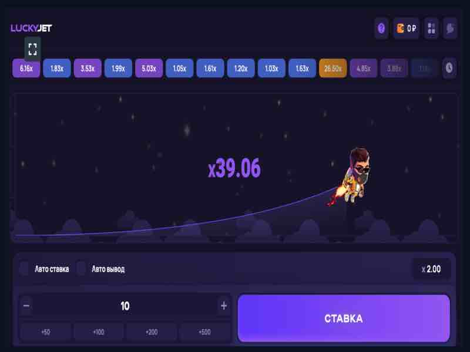
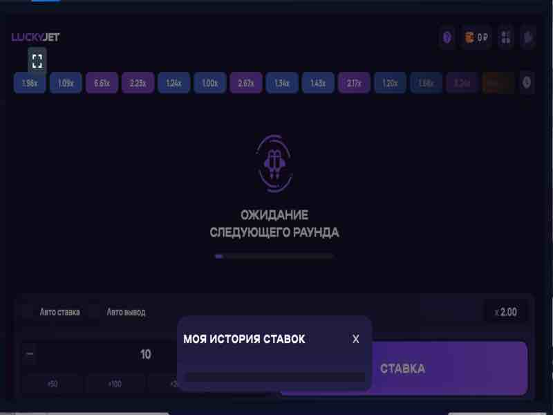

Play Lucky Jet
Lucky Jet is a rapidly growing online game. Lucky Jet has become a hit at 1win online casino. Every day more and more players discover Lucky Joe with his backpack in Lucky Jet. Why are more and more players choosing Lucky Jet?

Reasons for the popularity of the online game Lucky Jet
Yes, your favorite game is always your favorite, but have you ever had such a situation when the interface of an online game is a little boring and even a little annoying? If you play often, then this is possible. Lucky Jet is the same as Aviator or Crash, but a different interface. Instead of an airplane, you follow Lucky Joe with his backpack. And the rules of the game are the same - place a bet and withdraw money until the moment when Lucky Joe began to gain height.
Many slot games offer jackpot and bonus games where your potential winnings can be even higher. However, the coefficient of x50, x100 and even x200 is very common in Lucky Jet. The only question is how often. On the forums, players discuss that above x50 happens several times per hour, and more than x150 is usually once in 2-3 hours.
Only you decide when to withdraw your money while playing Lucky Jet. Hold and take risks, or withdraw immediately, but with a guarantee of a small win? Very different strategies for different players, but the principle is the same - you decide when to stop and fix the win. Or a loss if luck was not on your side.
Perhaps this is the main reason for the popularity of Lucky Jet. It all depends on the case. Decide to wait for the coefficient to increase to x10, and Lucky Joe flew away at the coefficient x5.1? Bad luck. And if you decide to play a little more conservatively and withdraw to x3, you would increase your bet by 3 times. There are many such examples, but the essence is the same - you cannot make a lof of money without luck. On the other hand, play rationally by choosing the correct strategy for playing Lucky Jet for money. Then the role of luck will noticeably decrease, as you follow a certain algorithm of the game.
How to play and win at Lucky Jet
The first step to winning at Lucky Jet is choosing a strategy and tactics for the game. Playing consciously is the choice of successful players. As an example, we can give two different and even opposite strategies.
Strategies and tactics in Lucky Jet

The essence of the conservative strategy of the game is to place a bet and withdraw at odds x1.1. In other words, you won't earn much, but it is almost impossible to lose. Sometimes there will be situations when Lucky Joe flies away with the odds x1.05, that is, losing is possible. However, on the forums, you will find ample evidence that, in the end, it is this type of game that brings the winnings and cash to your wallet.
Among the disadvantages of this strategy, which players are talking about, is a bit boring, because every time you withdraw money at the same coefficient. In this case, it is better to select the autoplay and the withdrawal will occur automatically.
Risk means expecting a high odds, that is, more than x100. Experienced players know that this ratio occurs every 60-90 minutes, that is, 1-1.5 hours. Look through history and you will see the last time the odds were over 100. Wait 1 hour and start betting big.

Of course, Lucky Jet has strategy options in the middle - not so cautious, but also not so risky strategies of the game. For example, play with a multiplier x2-x3. The chances are about 40% - 45%, that is, even if the bet is lost in the next round, it is possible to win back and even make money.
In any case, playing Lucky Jet from 1win online casino requires care. First, define your goals and answer the question: "Why am I playing Lucky Jet?" There are two main answers.
The meaning of the game in Lucky Jet
Depending on the answer to this question, decide how to play Lucky Jet. Play for money or for fun is your choice. Good luck with your new game. Great odds and may luck be on your side!